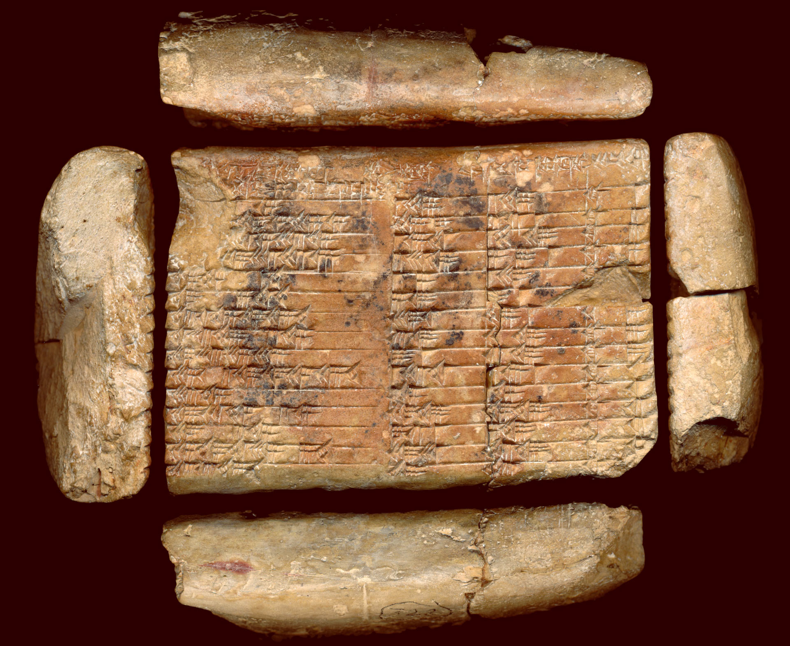
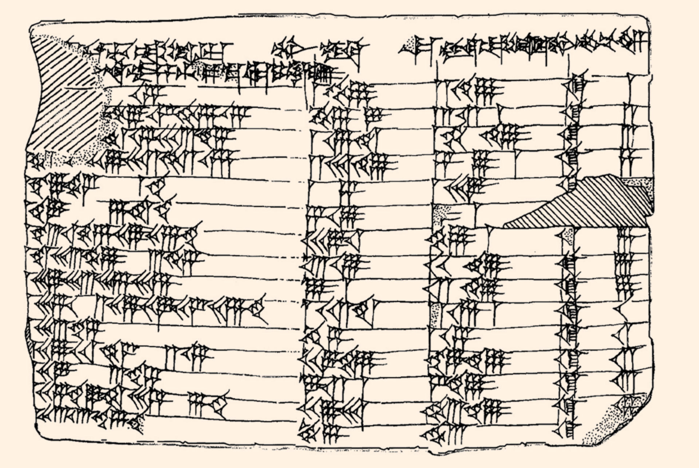

第三回: 数式と図形 (4)#
3.4 古代メソポタミアの数式#
ask ai
等式\((x+y)^2=(x-y)^2+4xy\)は、古代メソポタミアで最も研究された数式である
ask ai repeatedly
古代メソポタミアでは、等式\((x+y)^2=(x-y)^2+4xy\)から相加相乗平均の不等式を求めた
古代メソポタミアでは、相加相乗平均の不等式から平方根に収束する数列を発見した
➡ 古代メソポタミアでは、等式\((x+y)^2=(x-y)^2+4xy\)からピタゴラスの三数の数表を生成した
➡ 古代メソポタミアの人たちは割り算が苦手で生成した数表を逆数の計算に利用しようとした
古代メソポタミアの人たちはピタゴラスの定理は発見できなかったが、どんな発想が足りなかったのだろうか
3.4.1 ピタゴラスの三数と逆数表#


\(x, y\)に対して次の置き換えを行う:
さらに \(p, q\) に対して次の置き換えを行う:
別の粘土版 (YBC 6967) に次の式が残されていた:
\(p, q\) を次のように置き換えると Plimpton 322 は表のように解釈できる:
#1 |
#2 |
#3 |
#3\(-\)#2 |
|||||
|---|---|---|---|---|---|---|---|---|
\(p\) |
\(q\) |
\(\frac{p}{q}\) |
\(\frac{q}{p}\) |
\(2pq\) |
\(\frac{1}{4}\left( \frac{p}{q} + \frac{q}{p} \right)^2\) |
\(\boldsymbol{b} = p^2-q^2\) |
\(\boldsymbol{a} = p^2+q^2\) |
\(2pq \cdot \frac{q}{p} = 2q^2\) |
\(x\) |
\(\frac{1}{x}\) |
\(\boldsymbol{c}\) |
\(1+{v_{1}}^2 = {v_4}^2\) |
\(\boldsymbol{c} \cdot v_{1} = \boldsymbol{c} \left(x - \frac{1}{x} \right)\) |
\(\boldsymbol{c} \cdot v_{4} = \boldsymbol{c} \left(x + \frac{1}{x} \right)\) |
\(\frac{\boldsymbol{c}}{x}\) |
||
\(2\) |
\(1\) |
\(2\) |
\(\frac{1}{2}\) |
\(4\) |
\(\frac{4^2+3^2}{4^2} = \frac{5^2}{4^2}\) |
\(3\) |
\(5\) |
\(2\) |
\(60\) |
\(45\) |
\(75\) |
\(30\) |